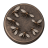
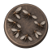
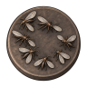
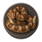
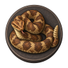
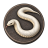
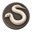
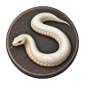

bee-swarm v2
Existing / three plump fuzzy bees
Colour — 48 / 64 / 96px
CSS grayscale — 48 / 64 / 96px
midge-swarm v4
NEW / seven thin paired-wing midges
Colour — 48 / 64 / 96px



CSS grayscale — 48 / 64 / 96px
hornet-swarm v4
NEW / four narrow-waist pointed hornets
Colour — 48 / 64 / 96px
CSS grayscale — 48 / 64 / 96px
brown-snake v1
Existing / closed thick brown ring
Colour — 48 / 64 / 96px
CSS grayscale — 48 / 64 / 96px
rattlesnake v4
NEW / stacked coil, raised head and rattle
Colour — 48 / 64 / 96px


CSS grayscale — 48 / 64 / 96px
king-cobra v2
Existing / upright hood and light belly
Colour — 48 / 64 / 96px
CSS grayscale — 48 / 64 / 96px
white-snake v4
First group / open single-tail ivory S
Colour — 48 / 64 / 96px



CSS grayscale — 48 / 64 / 96px
white-worm-mass v4
NEW / low lobed cluster of short worms
Colour — 48 / 64 / 96px
CSS grayscale — 48 / 64 / 96px